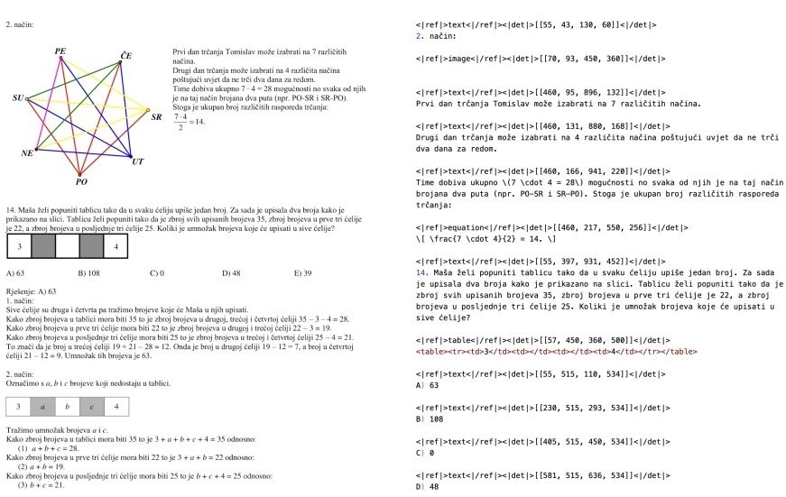

Trang 1
DeepSeek-OCR: Contexts Optical Compression
Haoran Wei, Yaofeng Sun, Yukun Li
DeepSeek-AI
Abstract
DeepSeek-OCR是一種用於識別文字的模型。該模型的優點包括其高精度的文字識別能力，以及其在實際應用中的良好性能。
(a) Fox 벤치마크에서의 압축 작업
(b) Omnidocbench上的性能表
图1 | 图(a)展示了压缩比（即实际文本中的标记数量与模型所使用的视觉标记数量之比）。该测试是在Fox[21]基准上进行测试的。图(a)还展示了在OmniDocBench[27]基准上进行的性能比较结果。DeepSeek-OCR模型能够在这些基准测试中取得最优秀的性能表现。
Trang 2
Contents
1 Introduction 3
2 Related Works 4
2.1 Typical Vision Encoders in VLMs 4
2.2 End-to-end OCR Models 4
3 Methodology 5
3.1 Architecture 5
3.2 DeepEncoder 5
3.2.1 Architecture of DeepEncoder 5
3.2.2 Multiple resolution support 6
3.3 The MoE Decoder 7
3.4 Data Engine 7
3.4.1 OCR 1.0 data 7
3.4.2 OCR 2.0 data 8
3.4.3 General vision data 9
3.4.4 Text-only data 9
3.5 Training Pipelines 9
3.5.1 Training DeepEncoder 10
3.5.2 Training DeepSeek-OCR 10
4 Evaluation 10
4.1 Vision-text Compression Study 10
4.2 OCR Practical Performance 12
4.3 Qualitative Study 12
4.3.1 Deep parsing 12
4.3.2 Multilingual recognition 16
4.3.3 General vision understanding 17
5 Discussion 18
6 Conclusion 19
Trang 3
1. Introduction
目前，那些大型语言模型在处理长文本时面临着巨大的计算挑战。这是因为随着序列长度的增加，模型的压缩效率会显著降低。
因此，我们探索了一种潜在的解决方案：利用视觉模态作为文本信息的高效压缩介质。通过这种方式，我们可以实现更高的压缩比，从而有效提高处理长文本的效率。
这种洞察力激励我们重新审视视觉-语言模型。从以LLM为中心的视角来看，OCR任务作为一种介于视觉和语言之间的中间形式，为这种视觉-文本压缩范式提供了一个理想的测试平台。因为这种方式能够建立一种自然的压缩-解压缩映射，这种映射能够在视觉和文本表示之间建立联系，同时还能提供定量评估指标。
因此，我们提出了DeepSeek-OCR这一模型。这是一个基于VLM技术的模型，旨在作为高效视觉-文本压缩技术的初步验证。我们的工作主要贡献了三个方面：
首先，我们提供了关于视觉文本标记压缩比的全面定量分析。我们的方法能够在9-10倍文本压缩的情况下，实现96%以上的OCR解码精度。而在10-12倍压缩的情况下，则能够实现约60%的OCR解码精度。这些结果表明，紧凑的语言模型能够有效地学习如何解码压缩后的视觉表示。这表明，较大的语言模型可以通过适当的预训练设计来轻松地获得类似的能力。
其次，我们引入了DeepEncoder这一新颖的架构。该架构能够保持较低的激活记忆，同时还能将视觉标记的数量控制在最低限度。而该压缩器则能够在视觉标记进入密集的全球注意力压缩器之前，先对视觉标记进行压缩处理，从而实现有效的记忆和标记压缩的效果。
第三，我们开发了基于DeepEncoder和DeepSeek3B-MoE的DeepSeek-OCR模型。如图1(b)所示，该模型能够在OmniDocBench平台上，使用20个节点（每个节点拥有8个A100-40G GPU）来运行LLM或VLM时，能够每天生成3300万页的数据。
In summary, this work presents a preliminary exploration of using visual modalities as an efficient compression medium for textual information processing in Large Language Models. Our quantitative analysis provides empirical guidelines for optimizing token allocation in VLM models. Meanwhile, the proposed DeepEncoder architecture demonstrates its practical feasibility, enabling real-world deployment capabilities. Although this work focuses on OCR as a proof-of-concept, this approach opens up new possibilities for rethinking how visual and linguistic modalities can be synergistically combined to enhance computational efficiency in large-scale text processing and agent systems.
Trang 4
图2 | 在流行的开放源代码的VLM中，常用的三种类型的编码器。不过，所有这些编码器都存在各自的缺陷。
2. Related Works
2.1. Typical Vision Encoders in VLMs
当前开放源代码的视觉模型，采用了三种不同的架构。第一种是双塔架构，这种架构被InternVL2.0所采用。这种架构通过基于补丁的分割来处理全尺寸图像，而不是通过瓷砖并行化来实现。
第二种是自适应分辨率编码，这种编码被Qwen2-VL所采用。这种编码通过NaViT范式来处理全尺寸图像，而不是通过瓷砖并行化来实现。
2.2. End-to-end OCR Models
OCR，尤其是文档解析任务，在图像转文本领域一直是一个非常活跃的话题。然而，一个当前模型尚未解决的关键研究问题是：对于一个包含1000个单词的文档，至少需要多少个视觉令牌来进行解码呢？这个问题对于基于“一张图片胜过千言万语”这一原则的视觉令牌研究来说，具有非常重要的意义。
Trang 5
圖3 | DeepSeek-OCR的架構。DeepSeek-OCR由一個DeepEncoder和一個DeepSeek-3B-MoE解码器組成。DeepEncoder是DeepSeek-OCR的核心部分，它由三個組成部分：一個SAM[17]，用於感知信息；一個CLIP[29]，用於處理知識信息；還有一個16x令牌壓縮器，用於將不同大小的令牌進行壓縮。
3. Methodology
3.1. Architecture
如图3所示，DeepSeek-OCR采用了一种统一的端到端VLM架构。该架构主要由一个8亿参数的SAM-base[17]组成，以及一个3亿参数的CLIP-large[29]组成。这两个组件是串联在一起的。解码器则采用了一种3B的MoE[19,20]架构。该架构拥有570亿个激活参数。在接下来的段落中，我们将深入探讨该模型的各个组成部分、数据工程以及训练技能等方面的内容。
3.2. DeepEncoder
为了探索上下文光学压缩的可行性，我们需要一个具有以下特性的视觉编码器：1. 能够处理高分辨率数据；2. 在高分辨率情况下，激活程度较低；3. 产生的视觉编码量较少；4. 能够支持多种分辨率的数据输入；5. 所使用的参数数量适中。不过，正如第2.1节所描述的那样，目前的开源编码器无法完全满足所有这些条件。因此，我们自己设计了一个新颖的视觉编码器，该编码器被命名为DeepEncoder。
3.2.1. Architecture of DeepEncoder
Before entering global attention, we need to process the input data first. This process involves several steps, including feature extraction, activation, and finally entering global attention.
Trang 6
चित्र 4 | विभिन्न कंप्रेशन अनुपातों के تحت मॉडल की प्रदर्शन का परीक्षण किया जाएगा। इसके अलावा, DeepSeek-OCR को कई रिज़ॉल्यूशन मोड्स के साथ कॉन्फिग किया गया है।
The 4096 tokens go through the compression module. As a result, the number of tokens becomes 4096/16 = 256. This process makes it possible to control the overall activation memory.
표 1 | DeepEncoder支持多种分辨率。无论是用于研究还是应用目的，我们都设计了DeepEncoder，使其能够支持多种本地分辨率以及动态分辨率模式。
| Mode | Native Resolution | Dynamic Resolution |
| Tiny | Small | Base | Large | Gundam | Gundam-M |
| Resolution | 512 | 640 | 1024 | 1280 | 640+1024 | 1024+1280 |
| Tokens | 64 | 100 | 256 | 400 | n $ \times $100+256 | n $ \times $256+400 |
| Process | resize | resize | padding | padding | resize + padding | resize + padding |
3.2.2. Multiple resolution support
假设我们有一个图像，该图像包含1000个光学字符。我们的目标是测试在解码过程中需要多少个视觉字符。这就要求模型能够支持不同数量的视觉字符。也就是说，DeepEncoder需要能够支持多种分辨率。
我们通过动态插值的方法，满足了上述要求。同时，我们还设计了多种分辨率模式，以便同时进行模型训练，从而实现单个DeepSeek-OCR模型能够支持多种分辨率的功能。如图4所示，DeepEncoder主要支持两种主要的输入模式：原生分辨率和动态分辨率。每一种输入模式都包含多个子模式。
对于原生分辨率，支持四种子模式：Tiny、Small、Base和Large。在这些子模式中，为了保持原始图像的宽高比，会对图像进行填充，使其达到相应的尺寸。在填充之后，有效视觉标记的数量会少于实际存在的视觉标记数量。其计算公式可以表示为：
$$$$ N_{v a l i d}=\lceil N_{a c t u a l}\times[1-((m a x(w,h)-m i n(w,h))/(m a x(w,h)))]\rceil $$$$
(1)
Where, “w” and “h” represent the width and height of the original input image.
Trang 7
在Gundam模式下，动态分辨率可以由DeepEncoder在Gundam模式下输出。该输出结果可以表示为：$n \times 100 + 256$，其中$n$表示瓦片的数量。对于宽度和高度都小于640的图像，则$n$被设置为0，即Gundam模式将降级为Base模式。
Gundam模式是通过对DeepSeek-OCR模型进行持续训练而获得的。这种模式主要用于负载均衡，因为Gundam主模式的分辨率太大，如果将其与训练模型一起进行训练，那么整体训练速度就会减慢。
3.3. The MoE Decoder
我们的解码器使用了DeepSeekMoE模型[19, 20]。具体来说，使用的是DeepSeek-3B-MoE模型。在推理过程中，该模型能够激活64个路由专家中的6个，同时还能激活2个共享专家。因此，在推理过程中，该模型能够激活大约570M个参数。而DeepSeek-3B-MoE模型则非常适合用于那些以领域为中心的研究工作，因为它能够同时发挥3B模型所具有的表达能力，同时又能享受到5亿小型模型的推理效率优势。
The decoder reconstructs the original text representation, based on the compressed latent vision tokens provided by DeepEncoder.
$$$$ f_{\mathrm{d e c}}:\mathbb{R}^{n\times d_{\mathrm{l a t e n t}}}\to\mathbb{R}^{N\times d_{\mathrm{t e x t}}};\quad\hat{\mathbf{X}}=f_{\mathrm{d e c}}(\mathbf{Z})\quad\mathrm{w h e r e}n\leq N $$$$
(2)
在这里，$\mathbf{Z} \in \mathbb{R}^{n \times d_{\text{latent}}}}$，表示的是从DeepEncoder中得到的压缩后的潜在表示。而函数$f_{\text{dec}}}$则表示的是一个非线性映射，通过这种映射，可以使得LLM在预训练优化方面，能够展现出更加自然的能力整合。
3.4. Data Engine
我們為DeepSeek-OCR構建了複雜且多樣化的訓練數據。這些數據包括OCR 1.0的數據，這些數據主要包含對複雜的人造圖像進行解析的任務；以及包含對一般視覺接口的數據進行解析的任務的數據。
3.4.1. OCR 1.0 data
Document data is the top priority for DeepSeek-OCR. We collect 30M pages of diverse PDF data covering about 100 languages from the Internet. Of these languages, Chinese and English account for approximately 25M, while other languages account for 5M. For this data, we create two types of ground truth: coarse annotations and fine annotations. Coarse annotations are extracted from the original document.
Trang 8

(a) वास्तविक चित्र/छवि
(b) उत्तम विवरणات, जिसमें लेआउट भी शामिल है.
चित्र 5 | OCR 1.0 वाले सुंदर विवरण। हम मूल तथ्यों को एक निर्धारित लेआउट में प्रदर्शित करते हैं। सभी निर्देशांकों को 1000 बिंदुओं में सामान्यीकृत किया गया है।
通过使用fitz技术，可以创建出高质量的图片-文本对。这些数据主要对公式和HTML格式表格有帮助作用。此外，我们还选择了一些开源数据作为补充。
在自然场景的OCR处理中，我们的模型主要支持中文和英文的识别。图像数据来源包括LAION [31]和Wukong [13]。这些图像数据通过PaddleOCR [9]进行标注。每个标注样本包含1000万条数据，分别用于中文和英文的识别。与文档OCR类似，自然场景的OCR处理也可以控制是否输出检测框。
3.4.2. OCR 2.0 data
According to GOT-OCR2.0 [38]], we refer to charts, chemical formulas, and plane geometry as OCR 2.0 data. For chart data, according to OneChart [7]], we use pyecharts and matplotlib.
Trang 9
(a) चार्ट संबंधी छवि-पाठ आधार-सत्य।
(b) ज्यामिति संबंधी छवि-पाठ आधार-सत्य।
圖6 | 對於圖表而言，我們並不使用OneChart的[7]字典格式。相反地，我們使用HTML表格格式作為標籤。這樣做可以節省一定的代金。每個線段都是使用Slow Perception [39]的方式來進行編碼的。
To render 10M images, we primarily use common line, bar, pie, and composite chart formats.
We define chart parsing as the process of converting images into HTML tables. Specifically, we use the size of the perception-ruler to model each line segment.
To increase the diversity of rendered data, we introduce geometric translation-invariant data augmentation. In this approach, the same geometric image is translated in the original image, corresponding to the same ground truth drawn at the centered position in the coordinate system.
Based on this, we construct a total of 1M plane geometry parsing data, as illustrated in Figure 6(b).
3.4.3. General vision data
DeepEncoder可以從CLIP的預訓練中獲得利益。而且，DeepEncoder具有足夠的參數，這使得DeepEncoder能夠整合出完整的視覺知識體系。因此，我們為DeepSeek-OCR引入了這種類型的数据，主要是為了保留出完整的視覺知識界面，如此一來，那些對我們的模型以及整個視覺知識領域感興趣的研究人員，就能夠更加輕鬆地進行文武能力測試了。
3.4.4. Text-only data
为了确保模型的语言处理能力，我们引入了10%的仅文本数据的预训练数据。所有数据都被处理成8192个标记的长度，这也是DeepSeek-OCR的序列长度。总结来说，在训练DeepSeek-OCR时，OCR数据占70%，一般视觉数据占20%，而仅文本数据的预训练数据则占10%。
3.5. Training Pipelines
我们的训练流程非常简单，主要由两个阶段组成：a) 独立地训练DeepEncoder；b) 继续训练预训练的DeepSeek-OCR模型，该模型使用了6M的样本数据。由于训练协议与其他模式相同，因此我们在此省略详细的描述。
Trang 10
3.5.1. Training DeepEncoder
根据Vary[36]的研究方法，我们采用了一种紧凑的语言模型[15])。同时，我们使用了一种预测下一个令牌的框架，以此来训练DeepEncoder。在训练过程中，我们使用了2个周期来训练模型。在训练过程中，我们使用了1280个样本来进行训练。在训练过程中，我们使用了AdamW优化器，以及余弦退火调度器。在训练过程中，我们使用了5e-5的学习率。在训练过程中，我们使用了4096个样本来进行训练。
3.5.2. Training DeepSeek-OCR
在DeepEncoder准备就绪之后，我们使用第3.4节中提到的数据来训练DeepSeek-OCR模型。
对于仅包含文本的数据，训练速度可达每天90B个令牌。而对于包含多种模态数据的数据来说，训练速度则可以达到每天70B个令牌。
表2 | 我们测试了DeepSeek-OCR的视觉文本压缩比率。使用所有英语文档，这些文档包含600到1300个标记。这些数据来自Fox[21]的基准测试。视觉标记的数量分别表示为64或100。这些数据代表了DeepEncoder在将输入图像大小调整为512×512和640×640之后，所输出的视觉标记的数量。
| Text Tokens | Vision Tokens =64 | Vision Tokens=100 | Pages |
| Precision | Compression | Precision | Compression |
| 600-700 | 96.5% | 10.5\times | 98.5% | 6.7\times | 7 |
| 700-800 | 93.8% | 11.8\times | 97.3% | 7.5\times | 28 |
| 800-900 | 83.8% | 13.2\times | 96.8% | 8.5\times | 28 |
| 900-1000 | 85.9% | 15.1\times | 96.8% | 9.7\times | 14 |
| 1000-1100 | 79.3% | 16.5\times | 91.5% | 10.6\times | 11 |
| 1100-1200 | 76.4% | 17.7\times | 89.8% | 11.3\times | 8 |
| 1200-1300 | 59.1% | 19.7\times | 87.1% | 12.6\times | 4 |
4. Evaluation
4.1. Vision-text Compression Study
我們選用Fox[21]的測試標準，以驗證DeepSeek-OCR在文本密集型文档中的壓縮與解壓縮能力。我們只需要在“微型且簡單的模式”下測試其性能。其中，“微型模式”指的是使用64個文本標記來進行測試，而“簡單模式”則指的是使用100個文本標記來進行測試。
Trang 11
表3 | 我们使用OmniDocBench [27]来测试DeepSeek-OCR在真实文档解析任务中的性能。在“Tokens”列中，括号中的数值表示有效的视觉标记，这些数值是根据方程1来计算得出的。
| Model | Tokens | English | Chinese |
| overall | text | formula | table | order | overall | text | formula | table | order |
| Pipeline Models |
| Dolphin [11] | - | 0.356 | 0.352 | 0.465 | 0.258 | 0.35 | 0.44 | 0.44 | 0.604 | 0.367 | 0.351 |
| Marker [1] | - | 0.296 | 0.085 | 0.374 | 0.609 | 0.116 | 0.497 | 0.293 | 0.688 | 0.678 | 0.329 |
| Mathpix [2] | - | 0.191 | 0.105 | 0.306 | 0.243 | 0.108 | 0.364 | 0.381 | 0.454 | 0.32 | 0.30 |
| MinerU-2.1.1 [34] | - | 0.162 | 0.072 | 0.313 | 0.166 | 0.097 | 0.244 | 0.111 | 0.581 | 0.15 | 0.136 |
| MonkeyOCR-1.2B [18] | - | 0.154 | 0.062 | 0.295 | 0.164 | 0.094 | 0.263 | 0.179 | 0.464 | 0.168 | 0.243 |
| PPstructure-v3 [9] | - | 0.152 | 0.073 | 0.295 | 0.162 | 0.077 | 0.223 | 0.136 | 0.535 | 0.111 | 0.11 |
| End-to-end Models |
| Nougat [6] | 2352 | 0.452 | 0.365 | 0.488 | 0.572 | 0.382 | 0.973 | 0.998 | 0.941 | 1.00 | 0.954 |
| SmolDocling [25] | 392 | 0.493 | 0.262 | 0.753 | 0.729 | 0.227 | 0.816 | 0.838 | 0.997 | 0.907 | 0.522 |
| InternVL2-76B [8] | 6790 | 0.44 | 0.353 | 0.543 | 0.547 | 0.317 | 0.443 | 0.29 | 0.701 | 0.555 | 0.228 |
| Qwen2.5-VL-7B [5] | 3949 | 0.316 | 0.151 | 0.376 | 0.598 | 0.138 | 0.399 | 0.243 | 0.5 | 0.627 | 0.226 |
| OLMOCR [28] | 3949 | 0.326 | 0.097 | 0.455 | 0.608 | 0.145 | 0.469 | 0.293 | 0.655 | 0.652 | 0.277 |
| GOT-OCR2.0 [38] | 256 | 0.287 | 0.189 | 0.360 | 0.459 | 0.141 | 0.411 | 0.315 | 0.528 | 0.52 | 0.28 |
| OCRFlux-3B [3] | 3949 | 0.238 | 0.112 | 0.447 | 0.269 | 0.126 | 0.349 | 0.256 | 0.716 | 0.162 | 0.263 |
| GPT4o [26] | - | 0.233 | 0.144 | 0.425 | 0.234 | 0.128 | 0.399 | 0.409 | 0.606 | 0.329 | 0.251 |
| InternVL3-78B [42] | 6790 | 0.218 | 0.117 | 0.38 | 0.279 | 0.095 | 0.296 | 0.21 | 0.533 | 0.282 | 0.161 |
| Qwen2.5-VL-72B [5] | 3949 | 0.214 | 0.092 | 0.315 | 0.341 | 0.106 | 0.261 | 0.18 | 0.434 | 0.262 | 0.168 |
| dots.ocr [30] | 3949 | 0.182 | 0.137 | 0.320 | 0.166 | 0.182 | 0.261 | 0.229 | 0.468 | 0.160 | 0.261 |
| Gemini2.5-Pro [4] | - | 0.148 | 0.055 | 0.356 | 0.13 | 0.049 | 0.212 | 0.168 | 0.439 | 0.119 | 0.121 |
| MinerU2.0 [34] | 6790 | 0.133 | 0.045 | 0.273 | 0.15 | 0.066 | 0.238 | 0.115 | 0.506 | 0.209 | 0.122 |
| dots.ocr $ ^{\dagger} $ $ ^{200dpi} $ [30] | 5545 | 0.125 | 0.032 | 0.329 | 0.099 | 0.04 | 0.16 | 0.066 | 0.416 | 0.092 | 0.067 |
| DeepSeek-OCR (end2end) |
| Tiny | 64 | 0.386 | 0.373 | 0.469 | 0.422 | 0.283 | 0.361 | 0.307 | 0.635 | 0.266 | 0.236 |
| Small | 100 | 0.221 | 0.142 | 0.373 | 0.242 | 0.125 | 0.284 | 0.24 | 0.53 | 0.159 | 0.205 |
| Base | 256(182) | 0.137 | 0.054 | 0.267 | 0.163 | 0.064 | 0.24 | 0.205 | 0.474 | 0.1 | 0.181 |
| Large | 400(285) | 0.138 | 0.054 | 0.277 | 0.152 | 0.067 | 0.208 | 0.143 | 0.461 | 0.104 | 0.123 |
| Gundam | 795 | 0.127 | 0.043 | 0.269 | 0.134 | 0.062 | 0.181 | 0.097 | 0.432 | 0.089 | 0.103 |
| Gundam-M $ ^{\dagger} $ $ ^{200dpi} $ | 1853 | 0.123 | 0.049 | 0.242 | 0.147 | 0.056 | 0.157 | 0.087 | 0.377 | 0.08 | 0.085 |
無布局： "\nFree OCR." 這種方式可以用來控制模型輸出的格式。不過，這種輸出格式仍然無法完全符合Fox的測試標準。因此，實際的性能會比測試結果高出一些。
如表2所示，在10×压缩比的情况下，模型的解码精度可以达到约97%。我们认为，第二个问题将会得到解决。
Trang 12
这是遗忘机制的一个特点。当我们将令牌压缩近20倍时，我们发现精度仍然可以达到60%。这些结果表明，光学上下文的压缩是一个非常有前景且值得研究的方向。而且，这种方法的实施不会带来任何额外的开销，因为它可以利用VLM基础设施来实现。
表4 | 在OmniDocBench中，不同类别的文档所达到的编辑距离。结果显示，某些类型的文档，只需使用64或100个视觉标记，就能取得良好的性能。而另一些文档则需要使用Gundam模式才能取得良好的性能。
| Mode | Type | Book Slides | Financial Report | Textbook | Exam Paper | Magazine | Academic Papers | Notes | Newspaper | Overall |
| Tiny | 0.147 | 0.116 | 0.207 | 0.173 | 0.294 | 0.201 | 0.395 | 0.297 | 0.94 | 0.32 |
| Small | 0.085 | 0.111 | 0.079 | 0.147 | 0.171 | 0.107 | 0.131 | 0.187 | 0.744 | 0.205 |
| Base | 0.037 | 0.08 | 0.027 | 0.1 | 0.13 | 0.073 | 0.052 | 0.176 | 0.645 | 0.156 |
| Large | 0.038 | 0.108 | 0.022 | 0.084 | 0.109 | 0.06 | 0.053 | 0.155 | 0.353 | 0.117 |
| Gundam | 0.035 | 0.085 | 0.289 | 0.095 | 0.094 | 0.059 | 0.039 | 0.153 | 0.122 | 0.083 |
| Guandam-M | 0.052 | 0.09 | 0.034 | 0.091 | 0.079 | 0.079 | 0.048 | 0.1 | 0.099 | 0.077 |
4.2. OCR Practical Performance
DeepSeek-OCR不仅仅是一个实验性模型。它拥有强大的实际应用能力。而且，由于采用了更高的令牌压缩率，因此DeepSeek-OCR在研究方面具有更高的上限。
如表4所示，某些类型的文档，其视觉令牌的压缩比例并不超过10×。例如，报纸中的文本令牌通常为4-5,000，远远超过了其他模式下的10×压缩比例。这些实验结果表明，上下文光学压缩的边界是明确的，这为研究视觉令牌优化在VLM中的应用提供了有效的参考。
4.3. Qualitative Study
4.3.1. Deep parsing
DeepSeek-OCR擁有兩種功能：一種是圖形布局方面的功能；另一種則是OCR 2.0的功能。這種模型能夠對各種圖形進行深度解析，包括圖表、幾何圖形、化學式等。而對於自然圖像的解析，也只需要一個統一的提示即可。
Trang 13
\n<|grounding|>Convert the document to markdown.
Macro news and views
We provide a brief snapshot on the most important economies for the global markets
最新的GS专有数据点/观点上的重大变化：
• 我们现在认为，美国的实际关税率将增加10个百分点（与之前的4-5个百分点相比）。此外，产品特定关税的进一步上升似乎也是很有可能的。
• 日本的消费者情绪在2月份有所下滑，这已经是连续第三个月出现这种情况了。
我们将2025年的核心PCE通胀预测上调至约3.5%（从2.5%的水平上调整）。同时，我们将2025年底的失业率预测上调至4.2%（从4.1%的水平上调整）。此外，我们将2025年12月的经济衰退概率预测上调至20%（从15%的水平上调整）。这些调整都是为了反映我们新的关税基础情况。
• Fed cutbacks: We still expect two Fed cutbacks in 2025, and one more in 2026.
It’s a time when there are many negotiations related to wages.
유럽
Emerging Markets (EM)
우리는 최근에 2025/2026/2027년까지의 유로존 실질 GDP 예측치를 각각 0.8%, 1.3%, 1.6%로 상향 조정했습니다. 이는 유럽의 국방비 지출이 점점 증가하고 있음을 반영하는 것입니다.
中国的经济增长势头依然强劲。我们预计，高科技制造业将继续在支持中国经济增长方面发挥重要作用。不过，2月份中国的CPI通胀率有所下降。不过，这种下降主要是由于与春节假期相关的各种因素所导致的。
Datapoints/trends we're focused on
德国的这一重大财政方案，我们预计会获得通过。不过，由于政治上的障碍，这一方案还远未完全实现。
印度的周期性经济增长放缓现象，我们认为现在已经结束了。不过，我们预计经济将会逐渐恢复。
ผลลัพธ์
Input image
\nPlease parse the image.
| 2024 | 2025 | 2026 | 2027 |
| Germany | 2.1 | 2.3 | 2.7 | 3.0 |
| France | 2.05 | 2.15 | 2.4 | 2.8 |
| Italy | 1.45 | 1.65 | 2.05 | 2.55 |
| Spain | 1.25 | 1.55 | 2.0 | 2.55 |
| Euro area | 1.85 | 2.05 | 2.4 | 2.8 |
깊은 파싱
रेंडरिंग
그림 7 | 금융 연구 보고서의 경우, DeepSeek-OCR의 심층 분석 모드는 활용될 수 있습니다. 이를 통해 문서 내의 차트와 같은 데이터 구조를 체계적으로 추출할 수 있습니다. 이러한 기능은 향후 OCR 모델에 있어 필수적인 역량입니다.
Trang 14
चित्र 8 | પુસ્તકો અને લેખો માટે, “डीप પાર્સિંગ મોડ” ની સુવિધા દ્વારા કૃત્ય કરી શકાય છે.
Trang 15
圖9 | DeepSeek-OCR在深度解析模式下，也能識別化學文獻中的化學式，並將其轉換成SMILES格式。在未來，OCR 1.0+2.0技術可能會在STEM領域中，對於VLM/LLM的發展起到重要的作用。
Trang 16
그림 10 | DeepSeek-OCR은 또한 간단한 평면 기하학적 도형을 복사할 수 있는 기능을 가지고 있습니다. 기하학적 도형 내의 선분들 사이의 복잡한 상호작용 때문에, 기하학적 도형을 처리하는 것은 매우 어려운 작업이며, 아직 해결해야 할 많은 문제들이 남아 있습니다.
4.3.2. Multilingual recognition
在網上可以找到的PDF數據中，除了中文和英文之外，還包含了大量的多語言數據。這些數據在訓練LLM時也非常重要。對於PDF文檔而言，DeepSeek-OCR可以處理近100種語言的文本。就像中文和英文的文檔一樣，多語言的文檔也可以支持多種不同的格式。圖11展示了視覺化結果的示例。
Trang 17
\n<|grounding|>Convert the document to markdown.
圖表 11 | 為了能夠處理大量爬取到的PDF文件（多語言數據），我們使用OCR功能來訓練模型，以處理近100種語言的數據。此外，少數民族語言的文件也可以通過不同的提示來支持雙向的布局和非布局的輸出。
4.3.3. General vision understanding
我们还提供了DeepSeek-OCR这一工具。该工具具备一定的图像理解能力。相关的可视化结果如图12所示。
Trang 18
The photo shows a red fire hydrant. There’s a smiling face on the fire hydrant. This makes the fire hydrant look very friendly and welcoming. At the top of the fire hydrant, there’s a black cover. Around this cover, there are some metal rivets. At the bottom of the fire hydrant, there’s a pink sticker. On this sticker, there’s the word “bowtie”. In the background, there’s a street. Along this street, there are several parked cars. There are also some trees along this street. Overall, the overall picture gives off a feeling of warmth and friendliness.
圖表12 | 我們保留了DeepSeek-OCR在一般視覺理解方面的能力。這些能力包括圖像描述、物體檢測、定位等。同時，由於模型中並不包括SFT（監督式精調）階段，因此該模型並不是真正的聊天機器人。此外，某些功能需要通過提示來激活。
5. Discussion
我们的研究代表了对视觉-文本压缩边界的初步探索。我们研究了需要多少视觉标记才能解码N个文本标记。初步结果显示，DeepSeek-OCR在实现接近无损的OCR压缩方面取得了令人鼓舞的成果。
Trang 19
圖13 | 忘記的機制，構成了人類記憶中最基本的特征之一。光學壓縮方法可以模擬這種機制：首先將歷史文本中的內容渲染成圖像，從而進行初步的壓縮處理。之後，再逐步調整那些較舊的圖像的大小，從而實現多級次的壓縮處理。在這種多級次的壓縮處理過程中，那些原本以文字形式存在的內容，就會逐漸變得模糊不清，從而實現了對那些原本以文字形式存在的內容的忘記處理。
在較老的上下文中，我們可以逐步減少所渲染的圖像的數量，從而進一步降低代碼的消耗。這種方法可以模仿生物學上的遺忘曲線，使得最近的信息能夠保持高精度的信息，而遠期的記憶則會通過增加壓縮比的方式而自然消失。
虽然我们的初步探索表明，有潜力实现可扩展的超长上下文处理。其中，最近的上下文保留了高分辨率，而较旧的上下文则消耗了更少的资源。不过，这种设想下的文本压缩系统，其实际意义以及局限性，都需要在未来的研究中进一步探讨。
6. Conclusion
在这份技术报告中，我们提出了DeepSeek-OCR模型。我们初步验证了该模型在上下文光学压缩方面的可行性。当然，仅依靠该模型来完全验证上下文光学压缩的效果是不够的。因此，在未来，我们还需要进行更多的评估工作。从另一个角度来看，上下文光学压缩仍然为研究和改进提供了很大的空间。这确实代表了一个充满希望的新方向。
Trang 20
References
[1] Marker. URL https://github.com/datalab-to/marker.
[2] Mathpix. URL https://mathpix.com/.
[3] Ocrflux, 2025. URL https://github.com/chatdoc-com/OCRFlux.
[4] G. AI. Gemini 2.5-pro, 2025. URL https://gemini.google.com/.
[5] S. Bai, K. Chen, X. Liu, J. Wang, W. Ge, S. Song, K. Dang, P. Wang, S. Wang, J. Tang, H. Zhong, Y. Zhu, M. Yang, Z. Li, J. Wan, P. Wang, W. Ding, Z. Fu, Y. Xu, J. Ye, X. Zhang, T. Xie, Z. Cheng, H. Zhang, Z. Yang, H. Xu, and J. Lin. Qwen2.5-vl technical report. arXiv preprint arXiv:2502.13923, 2025.
[6] L. Blecher, G. Cucurull, T. Scialom, and R. Stojnic. Nougat: Neural optical understanding for academic documents. arXiv preprint arXiv:2308.13418, 2023.
[7] J. Chen, L. Kong, H. Wei, C. Liu, Z. Ge, L. Zhao, J. Sun, C. Han, and X. Zhang. Onechart: Purify the chart structural extraction via one auxiliary token. In Proceedings of the 32nd ACM International Conference on Multimedia, pages 147–155, 2024.
[8] Z. Chen, W. Wang, H. Tian, S. Ye, Z. Gao, E. Cui, W. Tong, K. Hu, J. Luo, Z. Ma, et al. How far are we to gpt-4v? closing the gap to commercial multimodal models with open-source suites. arXiv preprint arXiv:2404.16821, 2024.
[9] C. Cui, T. Sun, M. Lin, T. Gao, Y. Zhang, J. Liu, X. Wang, Z. Zhang, C. Zhou, H. Liu, et al. Paddleocr 3.0 technical report. arXiv preprint arXiv:2507.05595, 2025.
[10] M. Dehghani, J. Djolonga, B. Mustafa, P. Padlewski, J. Heek, J. Gilmer, A. Steiner, M. Caron, R. Geirhos, I. Alabdulmohsin, et al. Patch n' pack: Navit, a vision transformer for any aspect ratio and resolution. Advances in Neural Information Processing Systems, 36:3632–3656, 2023.
[11] H. Feng, S. Wei, X. Fei, W. Shi, Y. Han, L. Liao, J. Lu, B. Wu, Q. Liu, C. Lin, et al. Dolphin: Document image parsing via heterogeneous anchor prompting. $ \underline{\text{arXiv preprint}} $ arXiv:2505.14059, 2025.
[12] Y. Goyal, T. Khot, D. Summers-Stay, D. Batra, and D. Parikh. Making the v in vqa matter: Elevating the role of image understanding in visual question answering. In Proceedings of the IEEE conference on computer vision and pattern recognition, pages 6904–6913, 2017.
[13] J. Gu, X. Meng, G. Lu, L. Hou, N. Minzhe, X. Liang, L. Yao, R. Huang, W. Zhang, X. Jiang, et al. Wukong: A 100 million large-scale chinese cross-modal pre-training benchmark. Advances in Neural Information Processing Systems, 35:26418–26431, 2022.
[14] High-flyer. HAI-LLM: Efficient and lightweight training tool for large models, 2023. URL https://www.high-flyer.cn/en/blog/hai-llm.
[15] S. Iyer, X. V. Lin, R. Pasunuru, T. Mihaylov, D. Simig, P. Yu, K. Shuster, T. Wang, Q. Liu, P. S. Koura, et al. Opt-iml: Scaling language model instruction meta learning through the lens of generalization. arXiv preprint arXiv:2212.12017, 2022.
[16] S. Kazemzadeh, V. Ordonez, M. Matten, and T. Berg. Referitgame: Referring to objects in photographs of natural scenes. In Proceedings of the 2014 conference on empirical methods in natural language processing (EMNLP), pages 787–798, 2014.
Trang 21
[17] A. Kirillov, E. Mintun, N. Ravi, H. Mao, C. Rolland, L. Gustafson, T. Xiao, S. Whitehead, A. C. Berg, W.-Y. Lo, et al. Segment anything. arXiv preprint arXiv:2304.02643, 2023.
[18] Z. Li, Y. Liu, Q. Liu, Z. Ma, Z. Zhang, S. Zhang, Z. Guo, J. Zhang, X. Wang, and X. Bai. Monkeyocr: Document parsing with a structure-recognition-relation triplet paradigm. arXiv preprint arXiv:2506.05218, 2025.
[19] A. Liu, B. Feng, B. Wang, B. Wang, B. Liu, C. Zhao, C. Dengr, C. Ruan, D. Dai, D. Guo, et al. Deepseek-v2: A strong, economical, and efficient mixture-of-experts language model. arXiv preprint arXiv:2405.04434, 2024.
[20] A. Liu, B. Feng, B. Xue, B. Wang, B. Wu, C. Lu, C. Zhao, C. Deng, C. Zhang, C. Ruan, et al. Deepseek-v3 technical report. arXiv preprint arXiv:2412.19437, 2024.
[21] C. Liu, H. Wei, J. Chen, L. Kong, Z. Ge, Z. Zhu, L. Zhao, J. Sun, C. Han, and X. Zhang. Focus anywhere for fine-grained multi-page document understanding. arXiv preprint arXiv:2405.14295, 2024.
[22] I. Loshchilov and F. Hutter. Sgdr: Stochastic gradient descent with warm restarts. $ \underline{\text{arXiv preprint arXiv:1608.03983}} $, 2016.
[23] I. Loshchilov and F. Hutter. Decoupled weight decay regularization. In $ \underline{\text{ICLR}} $, 2019.
[24] A. Masry, D. X. Long, J. Q. Tan, S. Joty, and E. Hoque. Chartqa: A benchmark for question answering about charts with visual and logical reasoning. $ \underline{\text{arXiv preprint arXiv:2203.10244, 2022.}} $
[25] A. Nassar, A. Marafioti, M. Omenetti, M. Lysak, N. Livathinos, C. Auer, L. Morin, R. T. de Lima, Y. Kim, A. S. Gurbuz, et al. Smoldocling: An ultra-compact vision-language model for end-to-end multi-modal document conversion. arXiv preprint arXiv:2503.11576, 2025.
[26] OpenAI. Gpt-4 technical report, 2023.
[27] L. Ouyang, Y. Qu, H. Zhou, J. Zhu, R. Zhang, Q. Lin, B. Wang, Z. Zhao, M. Jiang, X. Zhao, et al. Omnidocbench: Benchmarking diverse pdf document parsing with comprehensive annotations. In Proceedings of the Computer Vision and Pattern Recognition Conference, pages 24838–24848, 2025.
[28] J. Poznanski, A. Rangapur, J. Borchardt, J. Dunkelberger, R. Huff, D. Lin, C. Wilhelm, K. Lo, and L. Soldaini. olmocr: Unlocking trillions of tokens in pdfs with vision language models. arXiv preprint arXiv:2502.18443, 2025.
[29] A. Radford, J. W. Kim, C. Hallacy, A. Ramesh, G. Goh, S. Agarwal, G. Sastry, A. Askell, P. Mishkin, J. Clark, et al. Learning transferable visual models from natural language supervision. In $ \underline{\text{International conference on machine learning}} $, pages 8748–8763. PMLR, 2021.
[30] Rednote. dots.ocr, 2025. URL https://github.com/rednote-hilab/dots.ocr.
[31] C. Schuhmann, R. Vencu, R. Beaumont, R. Kaczmarczyk, C. Mullis, A. Katta, T. Coombes, J. Jitsev, and A. Komatsuzaki. Laion-400m: Open dataset of clip-filtered 400 million image-text pairs. arXiv preprint arXiv:2111.02114, 2021.
Trang 22
[32] A. Singh, V. Natarajan, M. Shah, Y. Jiang, X. Chen, D. Batra, D. Parikh, and M. Rohrbach. Towards vqa models that can read. In Proceedings of the IEEE/CVF conference on computer vision and pattern recognition, pages 8317–8326, 2019.
[33] T. Sun, C. Cui, Y. Du, and Y. Liu. Pp-doclayout: A unified document layout detection model to accelerate large-scale data construction. arXiv preprint arXiv:2503.17213, 2025.
[34] B. Wang, C. Xu, X. Zhao, L. Ouyang, F. Wu, Z. Zhao, R. Xu, K. Liu, Y. Qu, F. Shang, et al. Mineru: An open-source solution for precise document content extraction. $ \underline{\text{arXiv preprint}} $ arXiv:2409.18839, 2024.
[35] P. Wang, S. Bai, S. Tan, S. Wang, Z. Fan, J. Bai, K. Chen, X. Liu, J. Wang, W. Ge, et al. Qwen2-vl: Enhancing vision-language model's perception of the world at any resolution. arXiv preprint arXiv:2409.12191, 2024.
[36] H. Wei, L. Kong, J. Chen, L. Zhao, Z. Ge, J. Yang, J. Sun, C. Han, and X. Zhang. Vary: Scaling up the vision vocabulary for large vision-language model. In $ \underline{\text{European Conference on Computer Vision}} $, pages 408–424. Springer, 2024.
[37] H. Wei, L. Kong, J. Chen, L. Zhao, Z. Ge, E. Yu, J. Sun, C. Han, and X. Zhang. Small language model meets with reinforced vision vocabulary. arXiv preprint arXiv:2401.12503, 2024.
[38] H. Wei, C. Liu, J. Chen, J. Wang, L. Kong, Y. Xu, Z. Ge, L. Zhao, J. Sun, Y. Peng, et al. General ocr theory: Towards ocr-2.0 via a unified end-to-end model. $ \underline{\text{arXiv preprint}} $ arXiv:2409.01704, 2024.
[39] H. Wei, Y. Yin, Y. Li, J. Wang, L. Zhao, J. Sun, Z. Ge, X. Zhang, and D. Jiang. Slow perception: Let's perceive geometric figures step-by-step. arXiv preprint arXiv:2412.20631, 2024.
[40] Z. Wu, X. Chen, Z. Pan, X. Liu, W. Liu, D. Dai, H. Gao, Y. Ma, C. Wu, B. Wang, et al. Deepseek-vl2: Mixture-of-experts vision-language models for advanced multimodal understanding. arXiv preprint arXiv:2412.10302, 2024.
[41] W. Yu, Z. Yang, L. Li, J. Wang, K. Lin, Z. Liu, X. Wang, and L. Wang. Mm-vet: Evaluating large multimodal models for integrated capabilities. arXiv preprint arXiv:2308.02490, 2023.
[42] J. Zhu, W. Wang, Z. Chen, Z. Liu, S. Ye, L. Gu, H. Tian, Y. Duan, W. Su, J. Shao, et al. Internvl3: Exploring advanced training and test-time recipes for open-source multimodal models. arXiv preprint arXiv:2504.10479, 2025.